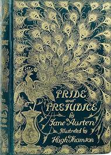

FANTASIES
Probably the best book to read. Harry Potter is a series of seven
fantasy novels written by British author J. K. Rowling. The novels
chronicle the lives of a young wizard, Harry Potter, and his friends
Hermione Granger and Ron Weasley, all of whom are students at Hogwarts
School of Witchcraft and Wizardry. The main story arc concerns Harry's
struggle against Lord Voldemort, a dark wizard who intends to become
immortal, overthrow the wizard governing body known as the Ministry of
Magic and subjugate all wizards and Muggles (non-magical people).Since
the release of the first novel, Harry Potter and the Philosopher's
Stone, on 26 June 1997, the books have found immense popularity,
positive reviews, and commercial success worldwide. They have
attracted a wide adult audience as well as younger readers and are
often considered cornerstones of modern young adult literature. As of
February 2018, the books have sold more than 500 million copies
worldwide, making them the best-selling book series in history, and
have been translated into eighty languages. The last four books
consecutively set records as the fastest-selling books in history,
with the final instalment selling roughly eleven million copies in the
United States within twenty-four hours of its release.
The Night Circus is a 2011 fantasy novel by Erin Morgenstern. It was
originally written for the annual writing competition National Novel
Writing Month (NaNoWriMo) over the span of three competitions. The
novel has a nonlinear narrative written from multiple viewpoints.
Six of Crows is a fantasy novel written by American author Leigh
Bardugo published by Henry Holt and Co. in 2015. The story follows a
thieving crew and is primarily set in the city of Ketterdam, loosely
inspired by Dutch Republic-era Amsterdam. The plot is told from
third-person viewpoints of seven different characters.

The popularity of this series has exploded over the last several
years, so what list wouldn’t include A Game of Thrones? If you like
multiple, intricate story lines, a cast of characters where none is
safe from death, and a world full of lords, knights, bastards,
wizards, ladies, and more, then you’ll like this series. It has magic,
intrigue, mystery, and lots of romance; in essence, a world unlike any
you’ve ever encountered.
The Shadow and Bone Trilogy, also known as the Grisha Trilogy, is a
series of three young-adult fantasy-adventure books by Leigh Bardugo.
The three main books in order are Shadow and Bone, Siege and Storm and
Ruin and Rising.
FICTION
Perseus "Percy" Jackson is a fictional character, the title character
and narrator of Rick Riordan's Percy Jackson & the Olympians series.
He is also one of seven main protagonists of the sequel series The
Heroes of Olympus, appearing in every book except The Lost Hero, and
appears in the ongoing Trials of Apollo series, making him one of the
few characters to appear in all three series of the Camp Half-Blood
chronicles. He has also been a narrator and protagonist in Riordan's
Greco-Roman/Egyptian crossover stories, part of the Demigods and
Magicians collection. The character serves as the narrator in Percy
Jackson's Greek Gods and Percy Jackson's Greek Heroes, also by Rick
Riordan.

The Book Thief is a historical novel by Australian author Markus
Zusak, and is his most popular work. Published in 2005, The Book Thief
became an international bestseller and was translated into 63
languages and sold 16 million copies. It was adapted into a 2013
feature film of the same name.
This #1 New York Times bestseller and deliciously creepy horror novel
has a storyline inspired by the Ripper murders and an unexpected,
blood-chilling conclusion.Seventeen-year-old Audrey Rose Wadsworth was
born a lord's daughter, with a life of wealth and privilege stretched
out before her. But between the social teas and silk dress fittings,
she leads a forbidden secret life. Against her stern father's wishes
and society's expectations, Audrey often slips away to her uncle's
laboratory to study the gruesome practice of forensic medicine.When
her work on a string of savagely killed corpses drags Audrey into the
investigation of a serial murderer, her search for answers brings her
close to her own sheltered world. The story's shocking twists and
turns, augmented with real, sinister period photos, will make this
dazzling, #1 New York Times bestselling debut from author Kerri
Maniscalco impossible to forget.
Cath, along with her more outgoing twin sister, Wren, begins studying
as a freshman at the University of Nebraska-Lincoln. While Wren is
making new friends and partying, Cath struggles to adjust due to her
social anxiety. Most of Cath's free time is spent writing fan fiction
about the fictional Simon Snow series.
Landline is a 2014 American sci-fi novel by Rainbow Rowell. It tells
the story of 37-year-old Georgie McCool who discovers that she is able
to call her husband's 22-year-old self through his landline. Rowell
stated that aspects from the novel are loosely based on her own life
such as the fact that Georgie is incredibly career-driven while her
husband is a stay-at-home dad. The character of Georgie McCool was
named after the song Georgy Girl and the village of McCool Junction.
CLASSICS
Little Women is a coming-of-age novel written by American novelist
Louisa May Alcott (1832–1888) which was originally published in two
volumes in 1868 and 1869. Alcott wrote the book over several months at
the request of her publisher. The story follows the lives of the four
March sisters—Meg, Jo, Beth, and Amy—and details their passage from
childhood to womanhood. It is loosely based on the lives of the author
and her three sisters.202 Scholars classify it as an autobiographical
or semi-autobiographical novel.

Pride and Prejudice is an 1813 romantic novel of manners written by
Jane Austen. The novel follows the character development of Elizabeth
Bennet, the dynamic protagonist of the book who learns about the
repercussions of hasty judgments and comes to appreciate the
difference between superficial goodness and actual goodness. Its
humour lies in its honest depiction of manners, education, marriage,
and money during the Regency era in England.

War and Peace (pre-reform Russian: Война и миръ; post-reform Russian:
Война и мир, romanized: Voyna i mir [vɐjˈna i ˈmʲir]) is a novel by
the Russian author Leo Tolstoy, first published serially, then
published in its entirety in 1869. It is regarded as one of Tolstoy's
finest literary achievements and remains an internationally praised
classic of world literature.

Great Expectations is the thirteenth novel by Charles Dickens and his
penultimate completed novel. It depicts the education of an orphan
nicknamed Pip (the book is a bildungsroman, a coming-of-age story). It
is Dickens's second novel, after David Copperfield, to be fully
narrated in the first person. The novel was first published as a
serial in Dickens's weekly periodical All the Year Round, from 1
December 1860 to August 1861. In October 1861, Chapman and Hall
published the novel in three volumes.